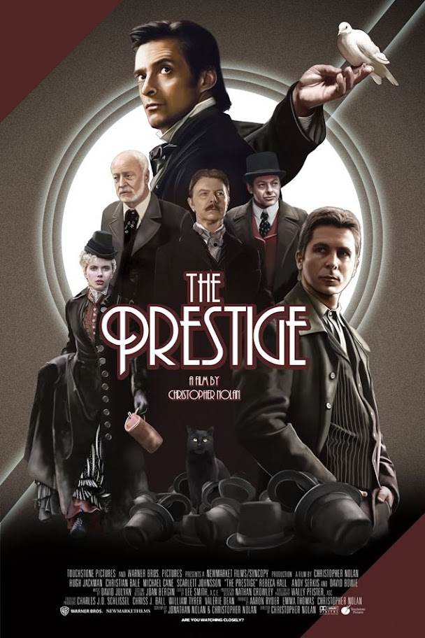

Release date :
October 20, 2006 (United States)
Directed by :
Christopher Nolan
Main characters :
Hugh Jackman
Christian Bale
Michael Caine
Scarlett Johansson
Rebecca Hall
Andy Serkis
David Bowie
Running time :
130 minutes
IMDB rating :
8.5/10
Download Link :
Download Now